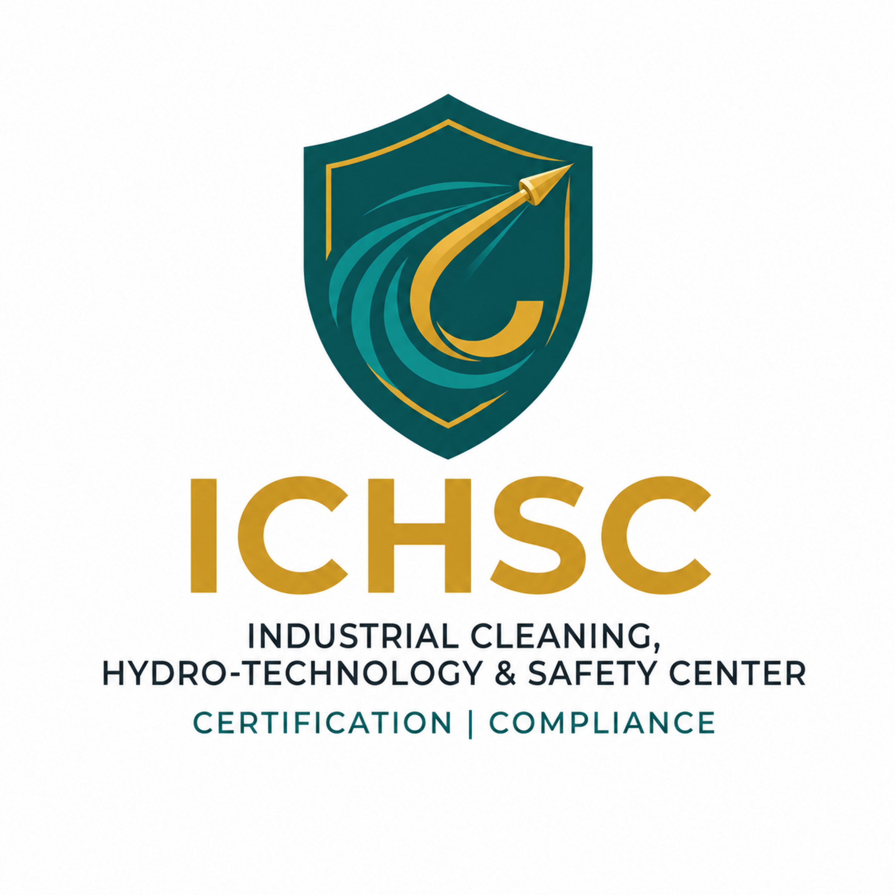

基础合规认证
适用于初次接触工业清洗安全管理的承包商，核心考察作业许可、风险识别与基本防护装备管理。
ICHSC 依托工业特种清洗领域的作业实践，建立涵盖高压水射流、化学清洗、受限空间及管线清洗的安全合规认证体系，为业主、承包商和从业人员提供可追溯的能力与合规证明。
适用于初次接触工业清洗安全管理的承包商，核心考察作业许可、风险识别与基本防护装备管理。
适用于已有一定项目经验的清洗作业单位，考察高压水射流/化学清洗方案审查能力与现场控制记录完整性。
适用于长期承接大型化工/能源项目的单位，考察跨项目合规体系建设与应急管理能力。
提交企业资质、项目案例、安全管理体系文件。
ICHSC 审核团队进行标准符合性初审。
视认证等级安排现场核查或远程资料问询。
通过审核后颁发对应等级证书，并纳入 ICHSC 认证名录。

示例证书样式，非实际颁发证书。
覆盖高压水射流、化学清洗与钝化、受限空间及管线清洗等场景，具体适用范围以认证证书说明为准。
面向承接化工、电力、能源行业清洗项目的承包商与运营单位。
各等级认证有效期与年审要求将在申请阶段明确告知，目前相关政策正在制定中。
请通过联系表单或 info@ichsc.com 提交初步咨询，团队将在 2 个工作日内回复。